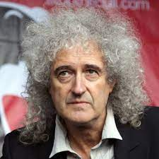

 Brian Harold May, CBE (lahir di Hampton, London, 19 Juli 1947; umur 74 tahun) adalah seorang musisi, penyanyi, penulis lagu, dan astrofisika Inggris. Dia adalah gitaris utama dari band rock Queen . Lagu-lagunya termasuk " We Will Rock You ", " Tie Your Mother Down", " I Want It All", " Fat Bottomed Girls", " Flash", " Hammer to Fall", " Save Me", " I Want It All", dan " The Show Must Go On ".
May adalah salah satu pendiri Queen dengan vokalis Freddie Mercury dan drummer Roger Taylor, yang sebelumnya tampil dengan Taylor di band Smile, yang telah ia ikuti ketika masih di universitas. Dalam lima tahun pembentukan mereka pada tahun 1970 dan perekrutan pemain bass John Deacon menyelesaikan lineup, Queen telah menjadi salah satu band rock terbesar di dunia dengan keberhasilan album A Night at the Opera dan single " Bohemian Rhapsody ". Dari pertengahan 1970-an hingga awal 1990-an, Queen adalah kehadiran yang hampir konstan di tangga lagu Inggris dan memainkan beberapa tempat terbesar di dunia, terutama memberikan kinerja yang terkenal di Live Aid pada tahun 1985. Sebagai anggota Queen, May dianggap sebagai musisi virtuoso dan dia diidentifikasi dengan suara khas yang diciptakan melalui karya gitar berlapisnya, sering menggunakan gitar listrik buatan rumah yang disebut Red Special. Menyusul kematian Merkurius pada tahun 1991, selain dari konser penghormatan tahun 1992 , pelepasan Made in Heaven (1995) dan singel penghormatan tahun 1997 untuk Mercury, " Bukan-Satu kecuali Kamu (Hanya Yang Baik Mati Muda) " (ditulis oleh Mei ), Queen dipecat selama beberapa tahun tetapi akhirnya ditemukan kembali oleh May dan Taylor untuk pertunjukan lebih lanjut yang menampilkan vokalis lain. Pada tahun 2005, sebuah jajak pendapat Planet Rock melihat May terpilih sebagai gitaris ketujuh terbesar sepanjang masa. Ia menduduki peringkat di No 26 di Rolling Stone daftar s dari 100 Gitaris Terbesar Sepanjang Masa. Pada tahun 2012, ia menduduki peringkat gitaris terbesar kedua di Polling pembaca majalah Guitar World. Pada tahun 2001, May dilantik ke Rock and Roll Hall of Fame sebagai anggota Quee dan pada tahun 2018 band ini menerima Grammy Lifetime Achievement Award.
May diangkat sebagai CBE oleh Ratu Elizabeth II pada tahun 2005 untuk "layanan untuk industri musik dan untuk kegiatan amal". May memperoleh gelar PhD dalam bidang astrofisika dari Imperial College London pada tahun 2007. Dan merupakan anggota Kanselir Liverpool John Moores University dari tahun 2008 hingga 2013.Ia adalah "kolaborator tim sains" dengan New Horizons NASA. Misi Pluto.
Ia juga merupakan salah satu pendiri kampanye kesadaran Asteroid Day.[10] Asteroid 52665 Brian may dinamai menurut namanya. May juga seorang aktivis hak-hak binatang, berkampanye menentang perburuan rubah dan memusnahkan musang di Inggris.